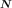
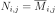
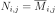
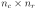
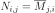
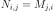

ComplexMatrix¶
- class ComplexMatrix(*args)¶
Complex Matrix.
- Available constructors:
ComplexMatrix(nr, nc)
ComplexMatrix(nr, nc, values)
- Parameters
- nrinteger
The number of rows of the complex matrix.
- ncinteger
The number of columns of the complex matrix.
- valuessequence of complex number
The sequence must have
 elements. It might be a
elements. It might be a
ComplexCollectionor aScalarCollection. Default is (0, 0).
See also
Examples
>>> import openturns as ot >>> m = ot.ComplexMatrix(2, 2, [1+2j, 3+4j , 5+6j, 7+8j]) >>> print(m) [[ (1,2) (5,6) ] [ (3,4) (7,8) ]] >>> m = ot.ComplexMatrix(2, 3, range(2*3)) >>> print(m) [[ (0,0) (2,0) (4,0) ] [ (1,0) (3,0) (5,0) ]]
Create a matrix from a numpy array:
>>> import numpy as np >>> array = np.array([[1, 2], [3, 4], [5, 6]]) >>> m = ot.ComplexMatrix(array) >>> print(m) [[ (1,0) (2,0) ] [ (3,0) (4,0) ] [ (5,0) (6,0) ]]
Methods
clean(threshold)Clean the matrix according to a specific threshold.
Accessor to the conjugate complex matrix.
Accessor to the transposed conjugate complex matrix.
Accessor to the object's name.
getId()Accessor to the object's id.
Accessor to the underlying implementation.
getName()Accessor to the object's name.
Accessor to the number of columns.
Accessor to the number of rows.
imag()Accessor to the imaginary part.
isEmpty()Test whether the matrix is empty or not.
real()Accessor to the real part.
setName(name)Accessor to the object's name.
Accessor to the transposed complex matrix.
solveLinearSystem
- __init__(*args)¶
- clean(threshold)¶
Clean the matrix according to a specific threshold.
- Parameters
- thresholdpositive float
Numerical sample which is the collection of points stored by the history strategy.
- conjugate()¶
Accessor to the conjugate complex matrix.
- Returns
- N
ComplexMatrix The conjugate matrix  of size
associated with the given complex matrix  such as
.
such as
.
- N
- conjugateTranspose()¶
Accessor to the transposed conjugate complex matrix.
- Returns
- N
ComplexMatrix The transposed conjugate matrix of size  associated with the given complex matrix
such as
.
- N
- getClassName()¶
Accessor to the object’s name.
- Returns
- class_namestr
The object class name (object.__class__.__name__).
- getId()¶
Accessor to the object’s id.
- Returns
- idint
Internal unique identifier.
- getImplementation()¶
Accessor to the underlying implementation.
- Returns
- implImplementation
The implementation class.
- getName()¶
Accessor to the object’s name.
- Returns
- namestr
The name of the object.
- getNbColumns()¶
Accessor to the number of columns.
- Returns
- ncinteger
The number of columns of
.
- getNbRows()¶
Accessor to the number of rows.
- Returns
- nrinteger
The number of rows of
.
- isEmpty()¶
Test whether the matrix is empty or not.
- Returns
- isEmptybool
Flag telling whether the dimensions of the matrix is zero.
- setName(name)¶
Accessor to the object’s name.
- Parameters
- namestr
The name of the object.
- transpose()¶
Accessor to the transposed complex matrix.
- Returns
- N
ComplexMatrix The transposed matrix of size associated with the given complex matrix
such as
.
- N
 of size
of size  .
.